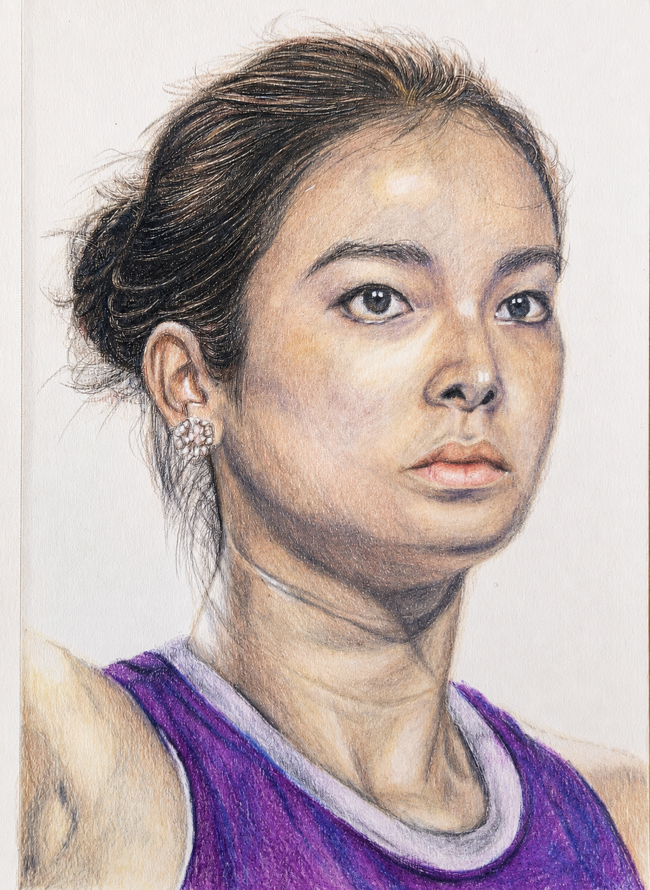

Week 15 · the portrait loop
How to draw Alex Eala in colored pencil
Alex Eala — calm direct gaze, hair up, purple top. An AI wrote the lesson, I drew it by hand, then it graded the result.

Every pencil number, pressure, layer count and stop condition. No email, no checkout — it is just a file.
HIT
VERDICT: HIT — with one catch (on W014's carry-forward: rivet the focal point). Focal point riveted. On this calm, direct-gaze face the EYES are the clear sharp accent — strong catchlights, crisp iris, real contrast — and the hierarchy holds (eyes sharpest, shoulders/shirt softer, background bare). W014's target landed. The catch — the skin went dark and muddy/grey. The shadow side, around the nose and especially the NECK read cool, ashen and dirty rather than warm — luminosity lost (R2 warm-shadow regressing), and the shadows are simply too dark (calibration). Root cause = the monotone underpainting (Naomi's question): Guide #15 opens the value map with 70% Warm Grey over the whole face + 90% in the shadows — a near-black cool-grey base under warm skin deadens it to mud, and CP is non-liftable so it can't be recovered. Strong: ambitious realistic portrait, strong structure and likeness, excellent eyes — the bones are right; it's the skin colour, not the drawing, that's off. [Updated 2026-08-17: the guide linked on this page has since been rewritten — its value-map step now opens light and warm, and the hair and garment sections were corrected against the finished drawing. The critique above is the record of what happened when this portrait was drawn, not a description of the guide you can download.]
Rebuild the skin's warmth: start the value map LIGHT and WARM (per the tutorial fix this week) so shadows glow instead of muddying, and glaze warmth (sienna / burnt ochre) back into the muddy zones — the neck most of all. Keep the focal-point discipline; it's working.
Finished this one? Hold it against the 8-Check Portrait Rubric — the same eight things the AI rules on here, written so you can judge your own drawing. Pass or fail, no score.